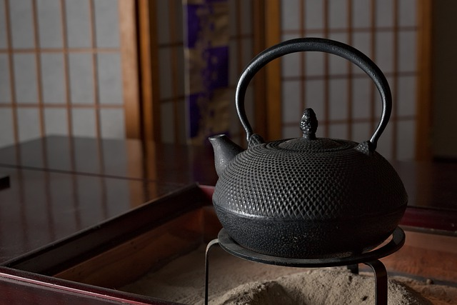

Our premises not only offers the comfort and tradition of a tea house but is also equipped with an intimate cafe. Take some time to try our famous loose-leaf teas and delicious blends created in-house.

Menu
Oolong Tea
Pheonix Oolong
Also called Dan Cong, meaning single trunk, refers to the style of cultivating each tea tree as a standalone, single-cultivar plant. Each tea tree will produce a different character, flavor, and taste. This high quality blend presents a surprisingly rich, floral aroma and taste.
Iron Godess
Loaded with subtle flavors and nuance. The medium oxidation level combined with the high growing elevation produces a sweet and floral cup, with hints of pine and the charcoal roasting process.
Black Tea
Golden Needles
Rich and malty black tea from Yunnan, China made from the unopened buds (pekoe leaf) of heirloom assamica plants. It makes a strong cup devoid of astringency, and features flavors of toasted malt, cocoa, and baking spice.
Breakfast Blend
A late-summer harvesting Yunnan black tea that is perfect with milk and sugar or on its own. The slow growth of the da yeh cultivar that occurs at 1600-1800 meters develops sweet malty flavors, accented with notes of caramelized sugar, baking spices, and cocoa.
Yellow Tips
Carefully hand picked young downy buds from ancient tea trees grown on Jing Mai mountain. A tea witha floral, fruity, and honey aroma. When brewed, it produces a bright and clear golden liquor with a rich smooth taste. The flavour is robust with notes of malt, sweet potato, chocolate, and honey.
Green Tea
Jasmine Green
A blend of spring-harvested green tea from Hubei, China scented with fresh jasmine flower grown in Fujian, China. This aromatic blend seamlessly combines the two flavors for a blend greater than the sum of its parts.
Emerald Spring
From Hubei, China the birthplace of the steaming process most commonly used to produce Japanese green tea. It is steamed and pan-fired and highlights flavors from both processes. The flavor is sweet and vibrant, with a buttery, nuttiness.
Uji Sencha Tea
Produced using sencha green tea leaves from Uji, Kyoto. The richly grassy and slightly bitter flavor will comfort you even on the coldest days.
Deep Matcha
From Japan's prestigious Uji region, known for top-quality matcha tea. It is stone-ground into a fine, bright green powder that has a mellow aroma with umami sweetness.
Unique Blends
1970's Loose Leaf Pu'er
A deep and rich loose leaf pu-erh with thick mouthfeel. Well aged large leaf material from old wild trees impart a smooth and complex character to this more than 40 year old tea. Notes of camphor and plum lead to a cooling sensation in the mouth and a lingering aftertaste.
White Peony
The combination of tea leaves and silver and white buds produces a bright, light gold infusion. The delicate, earthy aroma is sweet and slightly herbal with a lingering floral flavor.
Five Grain
This tea is a blend of barley, corn, adlay, soybeans, and germinated brown rice. Barley teas are beloved for their nutty flavor and digestive benefits. They pair well with many flavor profiles and are delicious both hot and cold.
Yuzu Hojicha
Featuring high-quality ingredients from Shizuoka, craftsmen carefully roast tea leaves for hojicha and blend them with Yuzu from Kawane, known for especially fragrant yuzu. The combination of toasty tea and bright citrus aroma is refreshing and summery.